April 4, 2024
The Lorentz Violin is a brand new musical instrument that uses magnetic disks spinning over inductors to create pitch. The pitch is tied directly to the speed of the wheel, which is spun by a small motor. The motor speed is selected with a ring the user moves along a keyboard. The ring can move continually, but the possible motor speeds are discrete values that spin the tone wheel at the same musical frequencies of piano keys. Loudness is controlled by a spring lever on the front of the body that controls the gain from the inductor. The audio is played through a transducer attached to the top plate of the resonator body, which in turn vibrates and turns the mechanical vibrations into acoustic vibrations through the air.
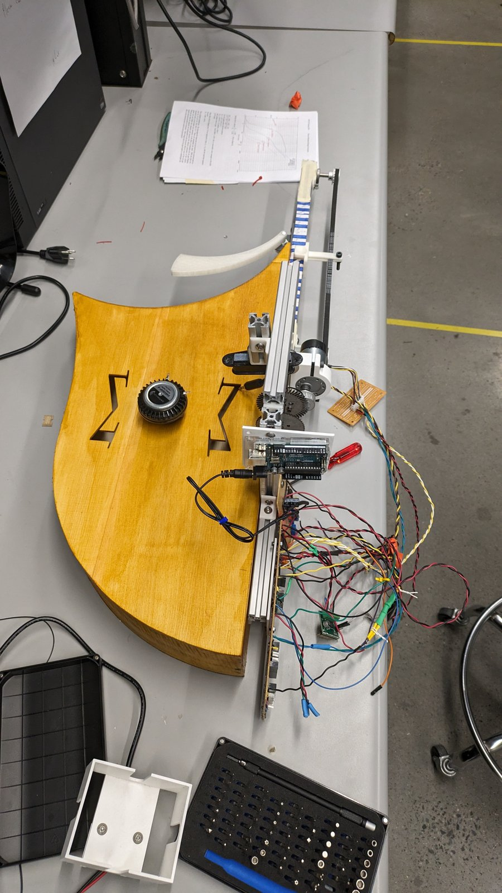
Tonewheels
The tonewheels might look like they have gear teeth cut into them, but those are actually musical waveforms etched into their circumference. When they spin near a wire, they induce their shape as a current in that wire, which is amplified and played through a speaker. This property, wherein a moving megnetic field induces a current in a nearby wire, is called Faraday's Law. I should mention that it would have been more accurate to name this instrument the Faraday Violin, as Lorentz's Law actually describes the inverse property, where a current passing through a coil of wire generates a force (and creates movement) in a nearby magnet.

Background: The Hammond Organ
The Hammond Organ Company was interested in miniaturizing the Organ and make its sound marketable to places other than giant churches, like homes. Their design replaced bellows and pipes with arrays of tonewheels. The Hammond B3 Organ had multiple tonewheels per note, all spinning on the same fixed-speed axle. Per note, the tonewheels were pitched at harmonics of each other, and the user could press a button to turn on the higher harmonic wheels and create a 'brighter' sound, in the same way one would 'pull out the stops' on a pneumatic organ to open up different pipes and change the timbre of the sound.
I experimented a bit with different wheel thicknesses and waveform magnitudes and frequencies. I made wheels with waveforms of sine, square, triangle, saw, and even a terrifying white noise wheel! I deliberated a lot over the number of teeth on each wheel.
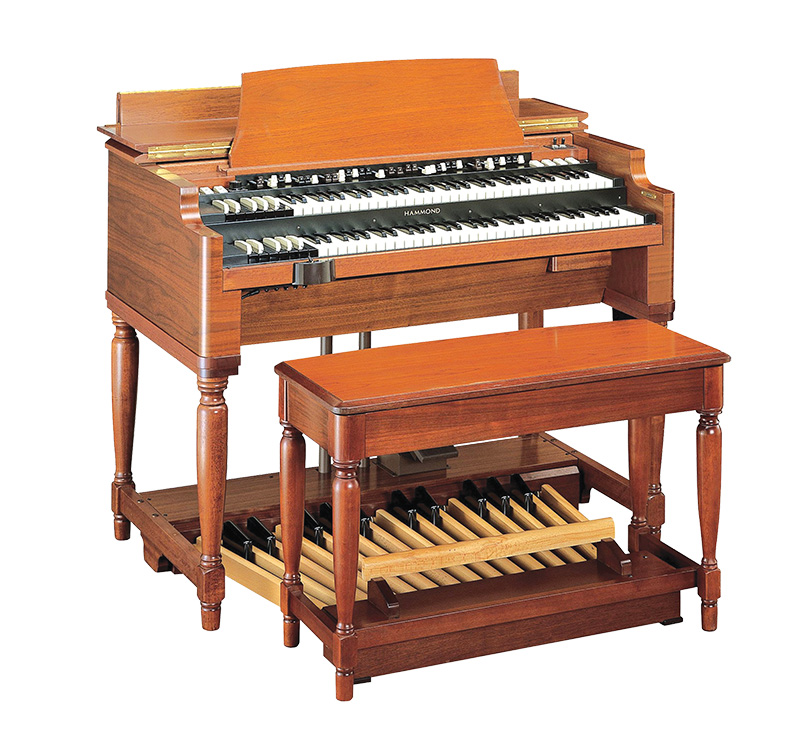

Note Selection
The earliest experiments with the tonewheel and its motor involved a battery plugged directly to the motor through a potentiometer to vary the motor's speed. This smooth glide through all possible motor speeds was enough to test the audio system, but was extremely nonmusical. I wanted this instrument to play distinct notes, and do so accurately enough that it didn't sound terribly out of tune.
The Keyboard
I'm a pianist and the piano keyboard is a very intuitive way for me to visualize music. The Ondes Martenot is a musical instrument from the 1920's that uses a piano-like keyboard and generates sound using analog electronics. Above the keyboard is a loop of string that can glide back and forth along the length of the keyboard to play continuous pitches instead of discrete notes. The user places their finger in a ring attached to the string to pull it back and forth. I took heavy inspiration from the Ondes Martenot in the design of the Lorentz Violin keyboard. The user places their pointer finger in a dimple on the cursor that rides along the tracked keyboard. A belt runs across the keyboard and through the cursor and over a potentiometer (a very special 10-rotation Linear Potentiometer at that!) that controls the motor speed.
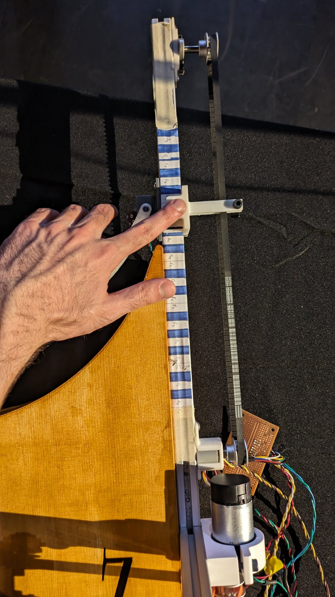
Continuous and Discrete Pitches
The motor speed isn't directly controlled by the potentiometer, though. I still want discrete notes! When the cursor is on the note A4, I expect the motor to turn at a certain speed that makes 440 waves of the tonewheel move across the inductor every second. When the cursor moves on to the next adjacent note, the motor speed should jump as fast as possible to the next musical speed. The keyboard is just drawn with Sharpie on a strip of paper that's taped onto the track, and the potentiometer position is measured by my microcontroller, and I manually set the values that correspond to boundaries between different notes, and then set their musical speeds. The ideal behavior as a drag the cursor along the keyboard is that the motor immediately jumps to the new speed required to achieve that note
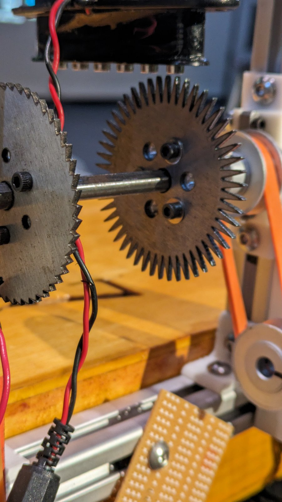
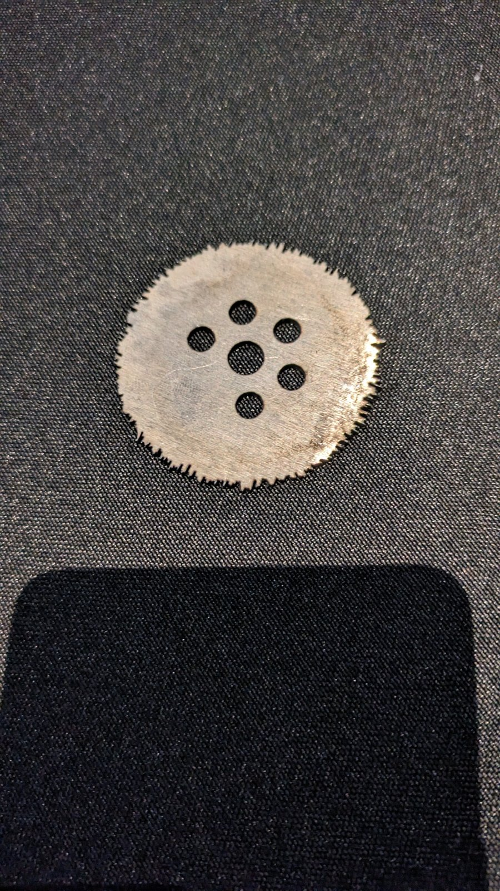
Control Problems with Tonewheels
Unfortunately, there are a lot of realities with the system that make the actual motor speed a lot more variable. Firstly, the motor doesn't necessarily know its own speed. I tell it to run at a certain speed and it will try to reach it, but the actual speed is very dependant on its load and the power I am able to give it. There is no feedback check yet to slow down or speed up to where it should be. Secondly, the motor can't switch between speeds instantly and so must pass through all 'in-between' notes on its way to its target speed. The faster the player changes speed, the faster the motor's speed must change. This acceleration must eventually slow down, and if the motor doesn't slow back down fast enough can overshoot and hit a note beyond the user's intention. Worse, the tonewheel is connected to the motor via a rubber belt, so the springiness of the belt can add further 'rubber-banding' effect to the sound.
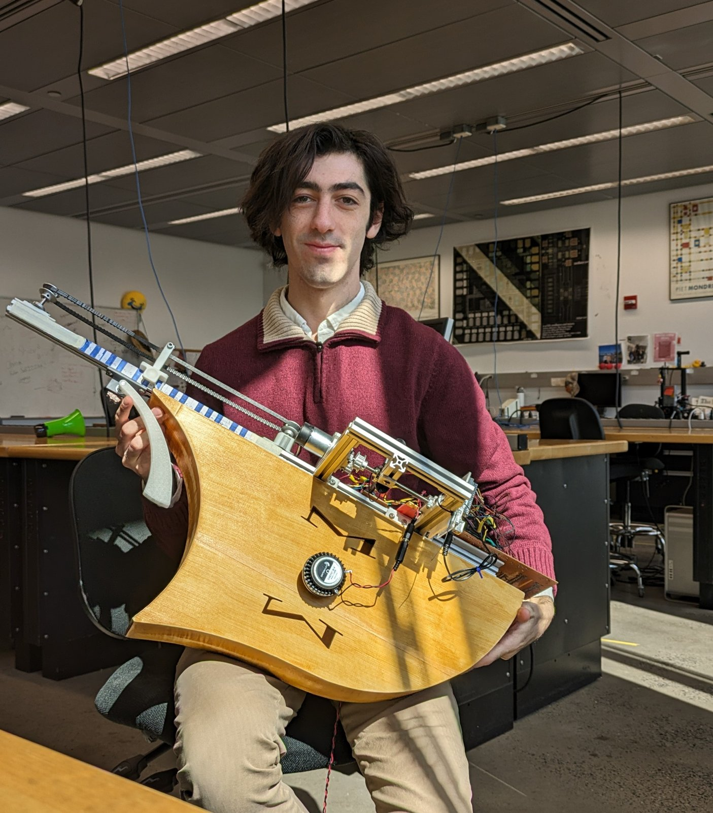
The PID Controller
A very elegant and intuitive algorithm to regulate motor speeds is a PID Loop, or "Proportional, Integral, and Derivative Loop". This is a feedback loop that looks at some process a system is doing that can be described as a rate over time, also calculates the integral and derivative of that process, compares them to targets, and adjusts some parameter in the system to close the distance. In the case of our motor-tonewheel system, we look at the speed of the tonewheel, its acceleration, and its displacement. We calculate the error between the each of these three measurements and the values we expect them to be. This signed error value is adjusted by coefficients and fed back into the motor to adjust its speed in the next cycle. The PID loop is run 9600 times on my microcontroller and so in the case of constant motor speed, the motor very quickly matches its target speed. As for snapping the motor speed quickly between notes while not overshooting, some care and experimentation is required to tune the coefficents in front of each feedback term to create a system that doesn't accidentally oscillate.
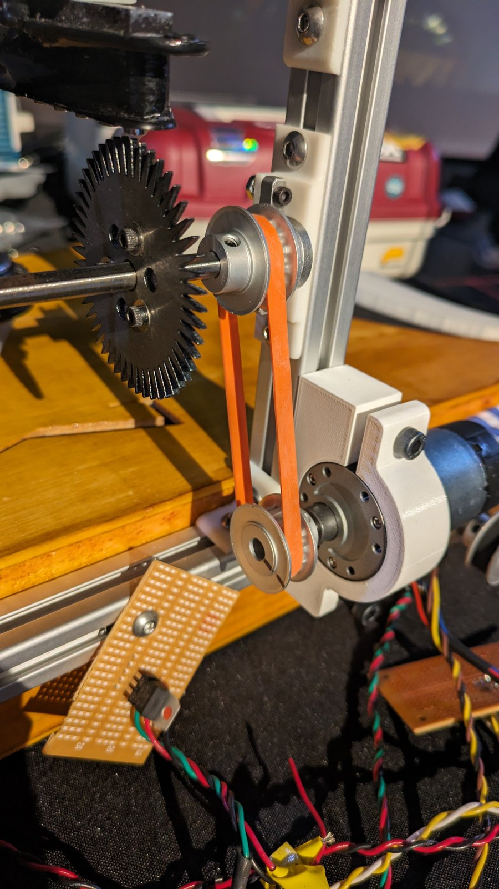
PID Tuning
In the gif below that I pulled from Wikipedia, a system's target rate is the dashed red line at 1. Its actual response to turning on and settling is in blue. With the initial parameters in the demo, the system is well off of its target. Tweaking the Proportional parameter closes the ditance to the target, but now it begins to overshoot the target substantially. Some systems, like precise robotic arms for example, might not be able to accept any overshoot. The Intergral and Derivative terms can then be adjsted to smooth out the response.
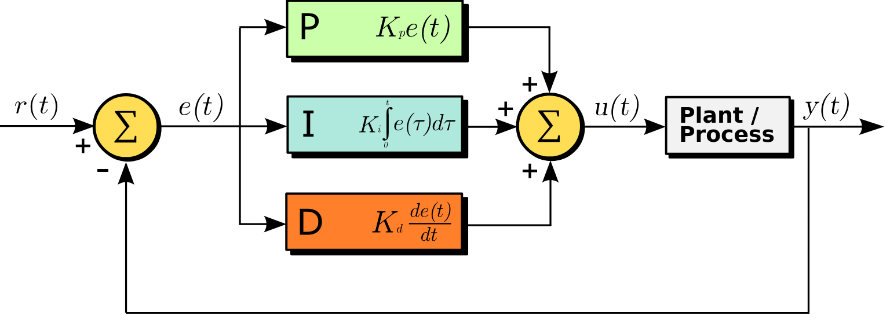
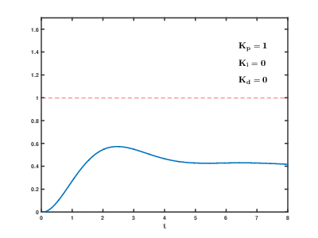
The Resonant Body
The electrical signal from the tonewheel and inductor is converted into a mechanical vibration by the transducer, which is glued to the top plate of the resonant body. The whole resonant body, which is made of thin panels of wood, vibrates and in turn vibrates a large volume of air, which becomes the signal as acoustic energy. I think it's a lot more fun to use complex acoustic resonators instead of cone speakers in boxes because of how they transform the sound. The box geometry, wood type and thickness, are all dimensions of the sound.
Constructing the Body
The design constraints of the body beyond acoustic performance was that I wanted something light that the player could support in front of them with their right hand, while their left reached over and controlled the cursor. The design of the keyboard meant that I wanted a flat right side, but I wanted the rest of the body to be as graceful as possble. The shape I came up with is a reference to the Hysteresis Curve, which relates an electric field strength around a material to the magnetic field strength that is generated in it. Below you can see the steps I took to make the box, starting with a frame of MDF and 3D-printed PLA. The sides are all made of African Rosewood that I bought from StewMac, a luthiery supplier. To bend the sides into shape, I soaked the wood and worked them back and forth over a section of pipe that I kept hot with a heat gun, until the curve of wood matched that of the frame. The top and sides were glued on using specially printed feet to match the curve of the parts and keep force of the clamp normal to the glue interface. The funny Σ symbols are a joke; violins bodies have two "F-Holes", stylized F-shaped holes in their top plate that allows some acoustic energy to escape. I think they look a bit like integrals, and while the violin is a fully 'analog' instrument, the Lorentz Violin is full of discrete digital electronics. It seemed fitting then to design Sigma-Holes instead.
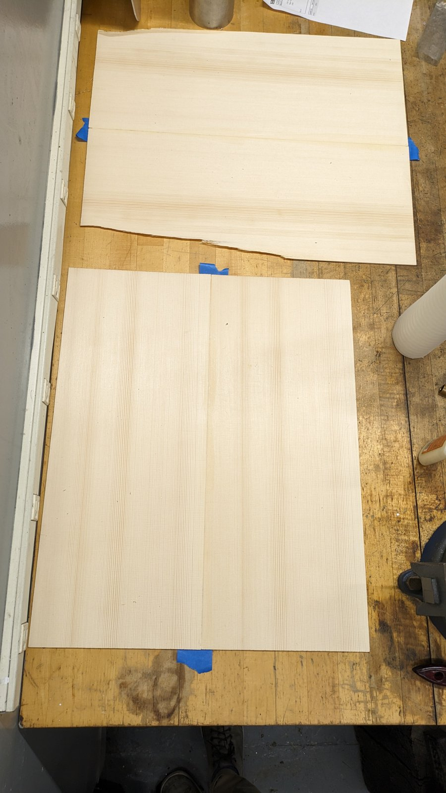
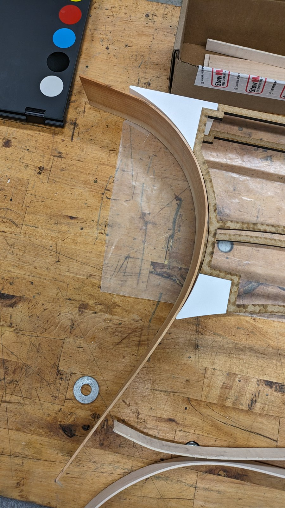
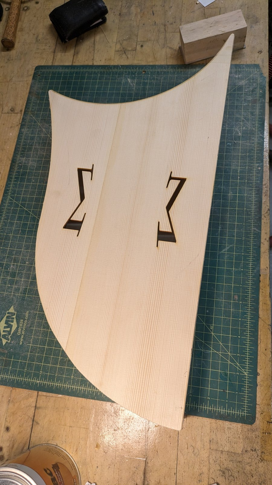
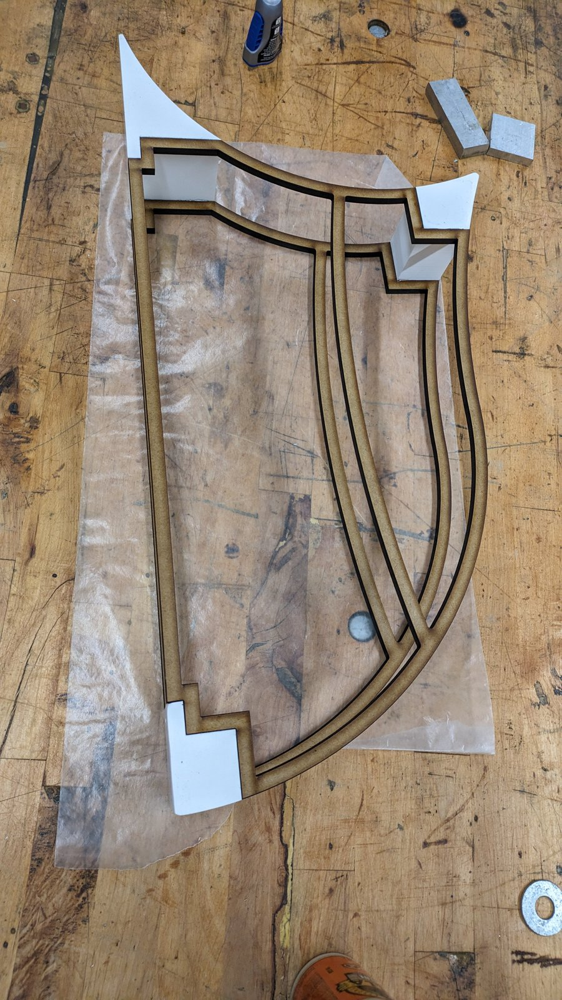
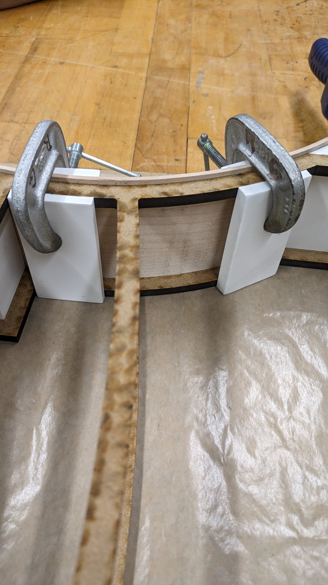
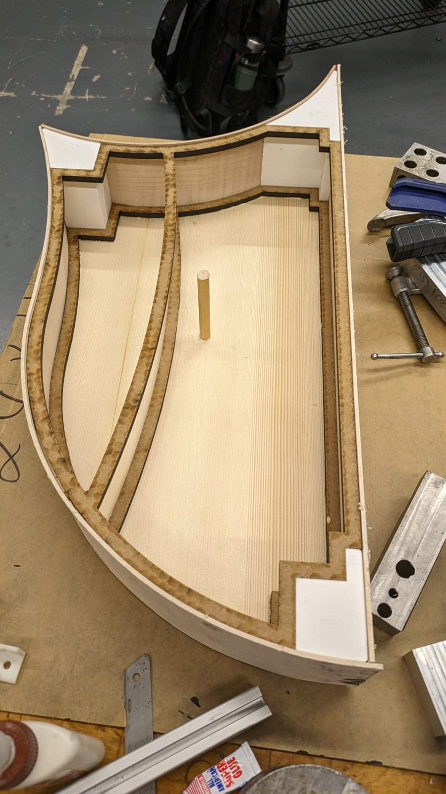
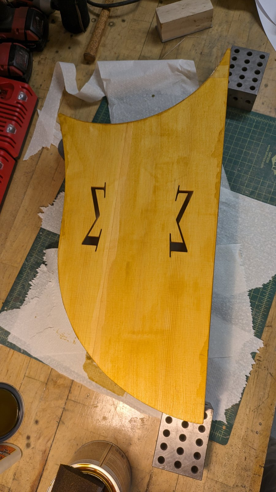
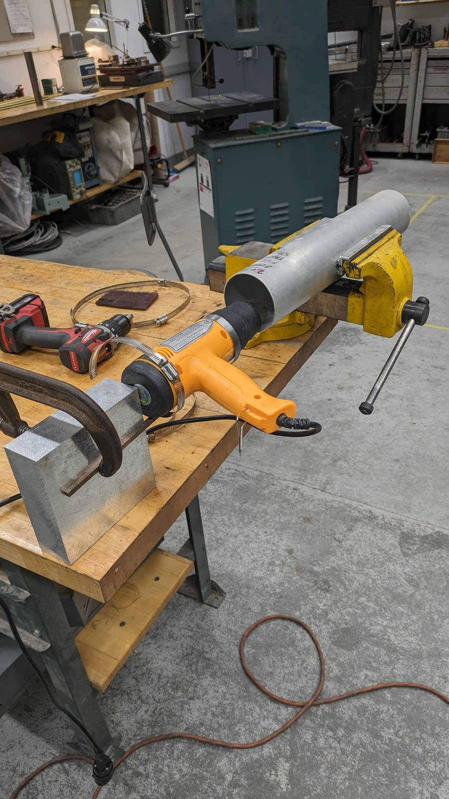
Further Acoustic Properties to Explore
While I sunk a lot of time into making a cool-looking acoustic system, I could spent a whole grad-course worth of time tuning and optimizing the system to sound loud, balanced, and beautiful.
Vibration Conduction
In a violin, mechanical vibration is conducted from the strings through the bridge into the top plate. A wooden strip called the Bass Bar runs along the length of the top plate and directly under one leg of the bridge, helping conduct vibration through the whole top plate. Under the other leg of the bridge sits the soundpost, a wooden dowel that conducts vibration from the top plate down to the bottom plate. These 'wires of vibration' are endlessly fascinating to me because of how much they remind me of waveguides and antennae, but hundreds of years older than those systems. The Lorentz Violin has versions of the bridge, bass bar, and sound post. The bridge is printed from resin and is what the transducer is directly attached to. Rather than strng tension pushing it down into the top plate, this bridge is glued down, with its two feet over the bass bar and sound post. The bass bar here is part of the MDF frame, and the sound post is likewise glued down because again I did not have the string tension to apply downward force onto the top plate.
Mode Shaping
A violin player tunes their strings, but a violin maker tunes the entire body. Strings generally have a single resonant frequency across their length. Plates however, can support a lot of different frequencies simultaneously. This property is extremely complicated and varies greatly with length, width, height, shape, and material. Wood is especially complicated because it has different strengths in different dimensions. One of the best ways to visualized the complex standing waves that develop in a 3D body is by vibrating the body, sprinkling sand over it, and allowing the sand to settle in the nodes, which on strings were just points, but on a vibrating surface is a line. We can vibrate the body by attaching it directly to a transducer. 3D objects can support a far greater variety of modes than strings, and so as we change the frequency output by the transducer, we see a great number of patterns emerge in the sand.
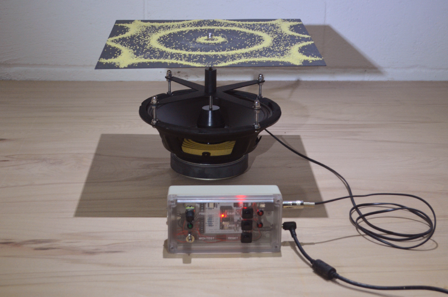
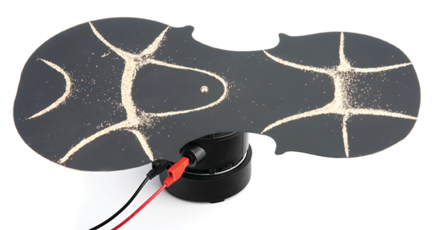
Our interest isn't in the patterns themselves but watching the sand bounce around gives us an idea of the strength of certain modes, and therefore the loudness of those resonant frequencies. The vibrating plate isn't just moving the sand, it's also vibrating the air. If the plate resonates strongly at note A 440Hz, then 440Hz will be the loudest heard frequency. But imagine if the plate's resonant frequency is 435Hz instead. If rising up from a G on its way to A, the system must pass over 435 briefly, but it may be enough time for that out of tune note to ring out before the desired pitch.
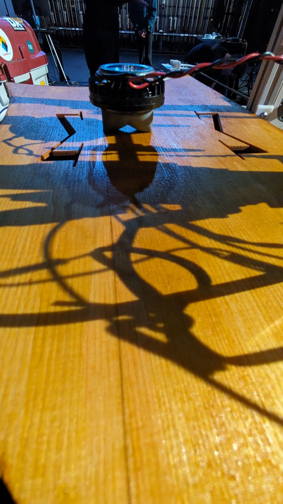
Softening the Blow
To smooth out this audio response curve (the transfer function as engineers call it), a luthier can remove material from a spot that acts as a strong node to help move it. They can do this with a chisel at first, then with sandpaper. When I worked in headphones I would add ribs to the internal cup geometry to improve strength and rigidity while adding the least amount of mass and material. In the case of the Lorentz Violin, I did nothing to control the modes, and it's honestly very apparent when you hear it play, and even moreso when you're playing it and hugging the vibrating body directly.
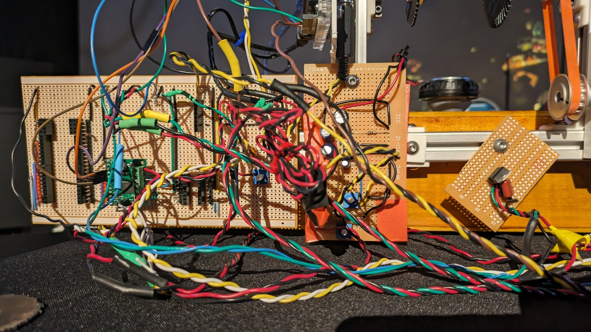
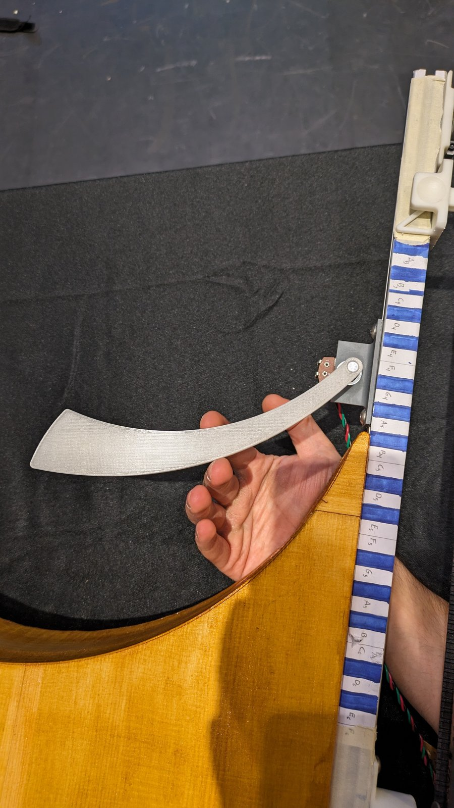
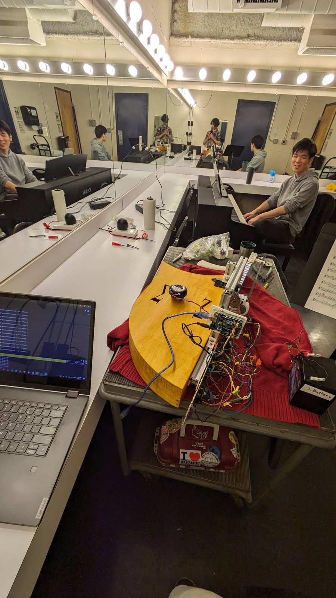
Photos from Version 1
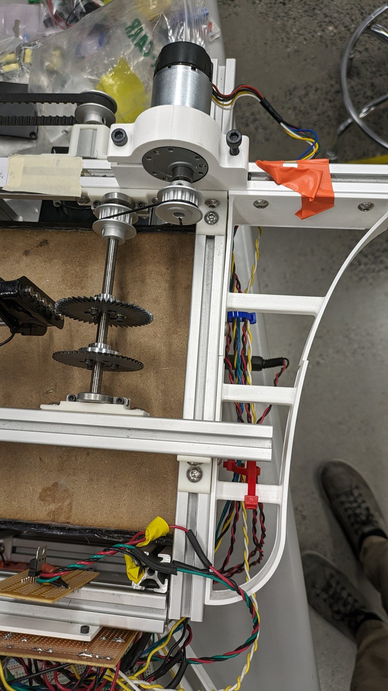
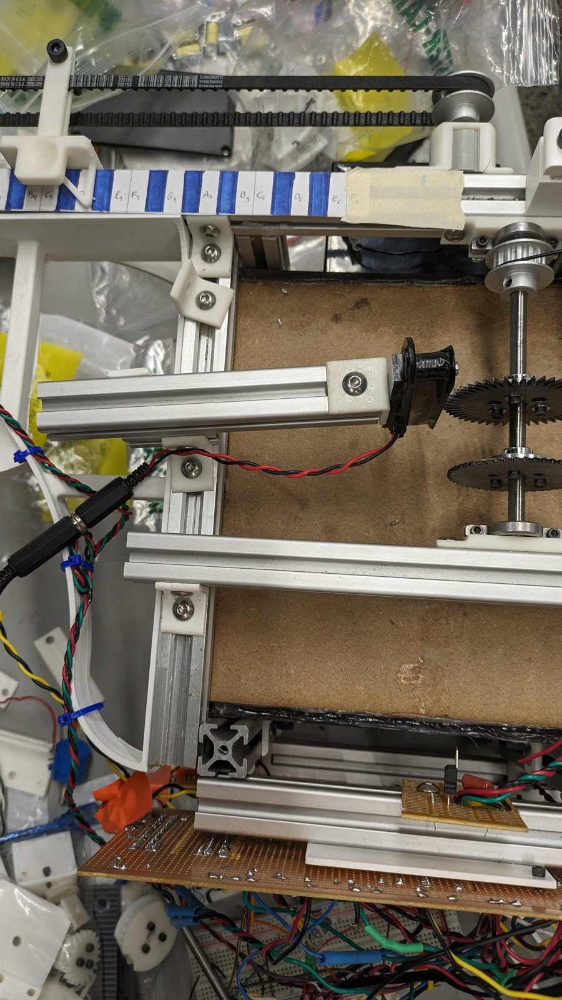
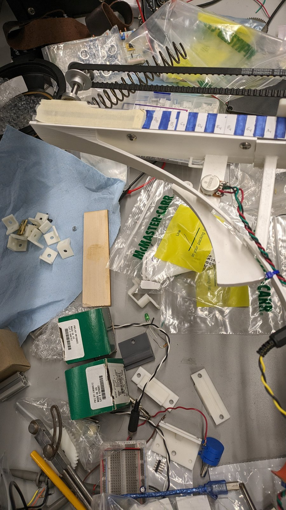
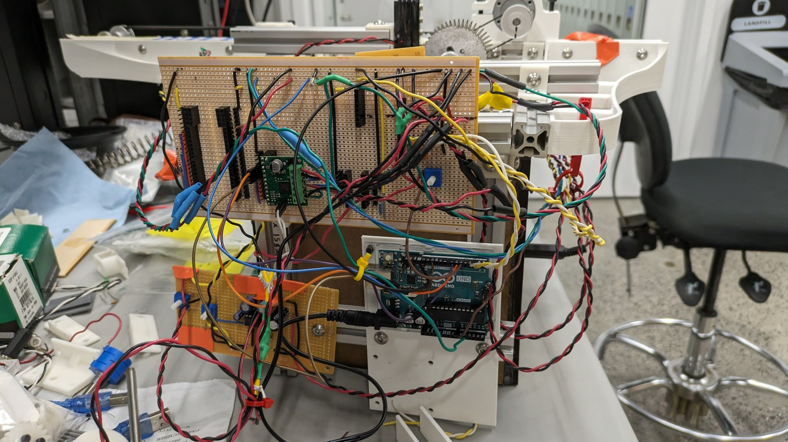
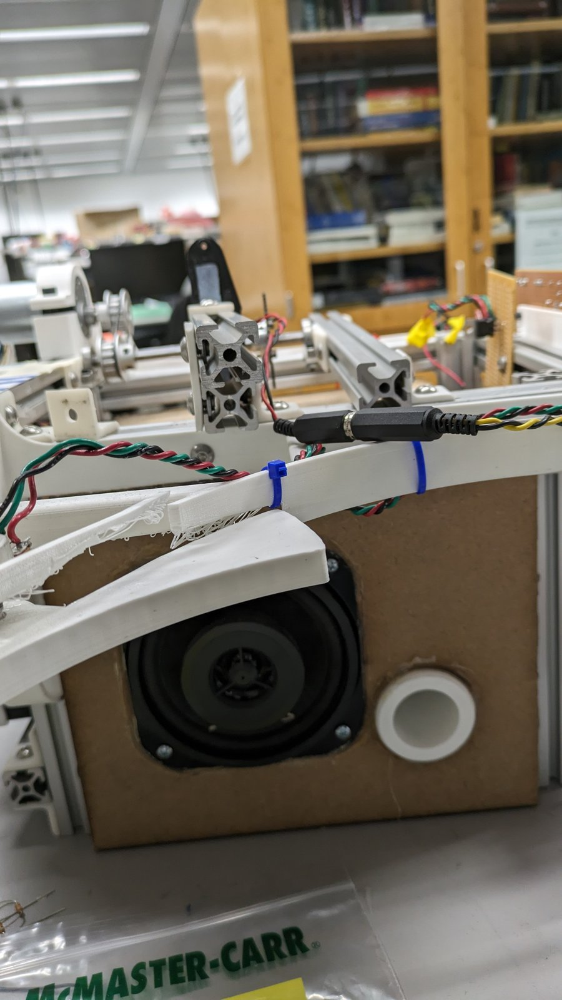